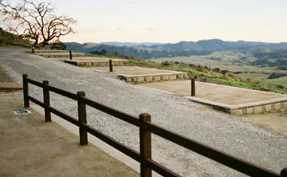
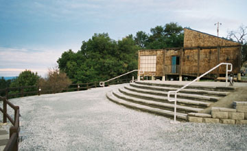
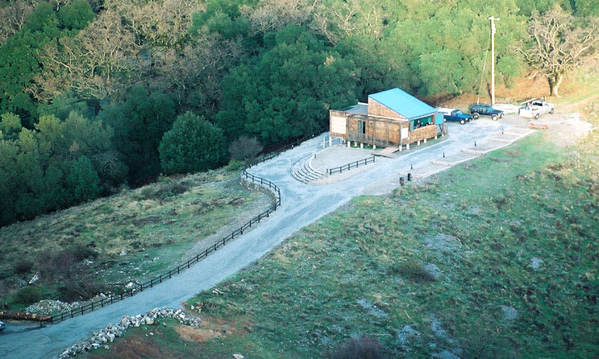

|
Mike Koop took these pictures of the nearly completed improvements made by State Parks at the site of the Fremont Peak observatory as part of their volunteer improvement program. Perhaps the most significant improvement is the removal of four large trees that obscured the southern sky from the once popular observing area behind the ranger residence. Other improvements include new roads and walkways with low-intensity safety lighting, observing pads on the south side of the observatory with safety lighting and power, and a large outdoor multi-use area on the west side. |

|
|  |  |
| Top right: The before picture, Fremont Peak Observatory as seen from Fremont Peak. Above left: Powered observing pads. Above right: Multi-use area with turnaround for constellation talks and additional telescopes. Below: The after picture, Fremont Peak Observatory as seen from the summit. Note that the large tree seen in the top right picture is no longer there. | |
|  | |